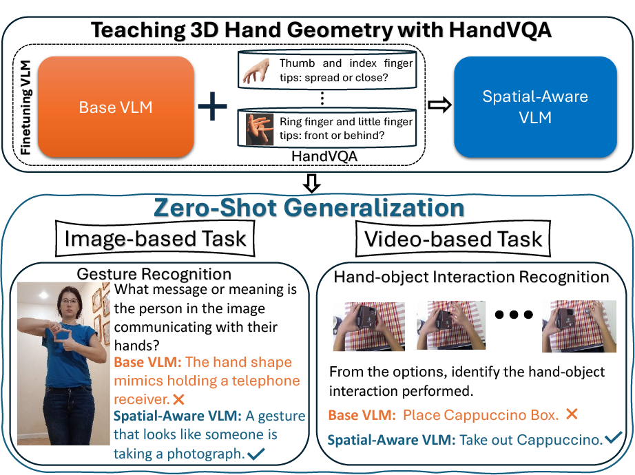

HandVQA: Diagnosing and Improving Fine-Grained Spatial Reasoning about Hands in Vision-Language Models
CVPR 2026Denver, CO, USADataset released
A benchmark grounded in 3D hand geometry. We found that VLMs struggle with fine-grained spatial reasoning about hands, and that explicit 3D supervision helps considerably.
Project Page Paper Code Dataset Slides
Abstract
We introduce HandVQA, a large-scale benchmark with 1.6M+ geometry-derived VQA pairs spanning joint angles, distances, and relative spatial relations (X/Y/Z). We find that explicit 3D supervision improves spatial reasoning and also transfers to gesture recognition and hand-object interaction tasks.
BibTeX
@inproceedings{sayem2026handvqa,
title = {HandVQA: Diagnosing and Improving Fine-Grained Spatial Reasoning about Hands in Vision-Language Models},
author = {Sayem, MD Khalequzzaman Chowdhury and Chowdhury, Mubarrat Tajoar and Tiruneh, Yihalem Yimolal and Khan, Muneeb A. and Ali, Muhammad Salman and Bhattarai, Binod and Baek, Seungryul},
booktitle = {Proceedings of the IEEE/CVF Conference on Computer Vision and Pattern Recognition (CVPR)},
year = {2026}
}